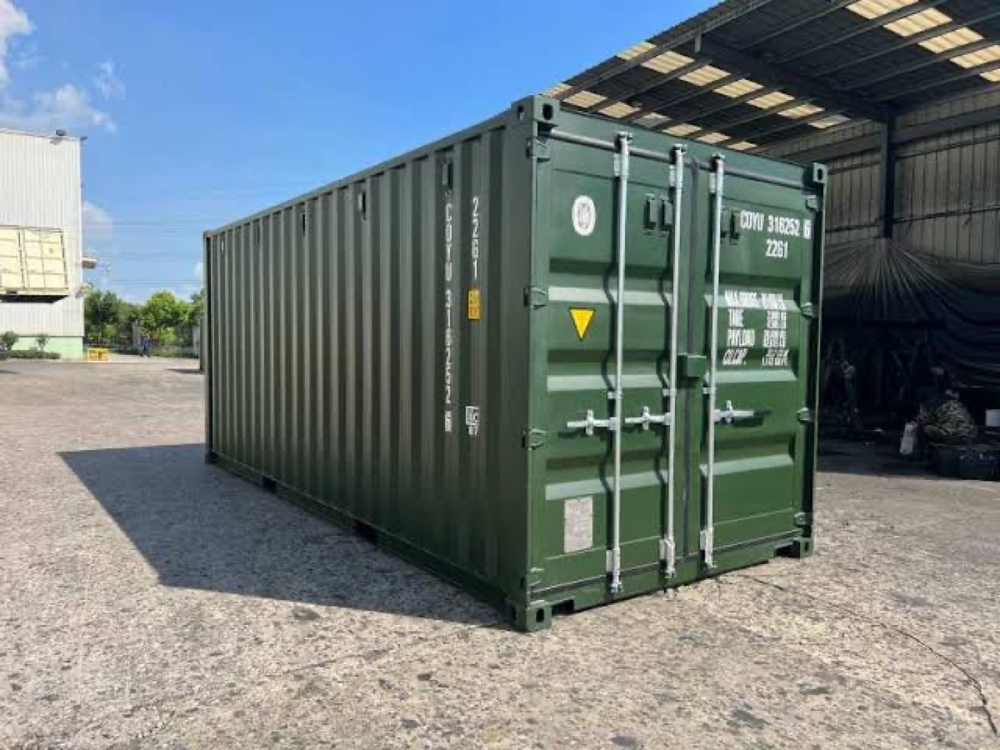

Reliable & fast
rail transport solutions
High-volume freight rail corridors connecting the Port of Colombo with major inland distribution depots. Combining cost-efficiency, massive payload capability, and up to 65% reduction in carbon emissions.
Comprehensive rail freight transport solutions
Moving heavy tonnage without highway gridlock. Rail is the smart backbone for mineral, bulk agricultural, and heavy container transport across Sri Lanka.
 Heavy Haul
Heavy Haul
Bulk Freight & Raw Material Trains
Dedicated hopper wagons, flatcars, and boxcars capable of moving thousands of metric tons of cement, grain, fertilizer, and industrial minerals per journey.
 Port Shuttle
Port Shuttle
Direct Port Siding Container Shuttles
Seamless transfer directly from Colombo Port wharf spurs onto rail cars, bypassing congested city roads for rapid inland delivery.

Eco Transport65% Lower CO2 Carbon Footprint
Significantly lower emissions per ton-kilometer compared to standard highway trucking. Perfect for corporate ESG sustainability mandates.
What's our rail transport services
Versatile rail configurations engineered for maritime containers, bulk commodities, and temperature-sensitive reefer boxes.
Full Container Load (FCL) by Rail
Transporting 20ft, 40ft, and high-cube marine containers on specialized rail flatcars. Direct connection from Colombo Port terminals straight to inland industrial rail sidings.
- Scheduled block train departures with coordinated siding slots
- Heavy container transport exceeding standard highway road weight restrictions
- In-house CHA customs supervision along the rail transit line

Less than Container Load (LCL) Groupage
Economical consolidated rail transport for smaller regional commercial orders. Goods are loaded at Colombo CFS depots and distributed via inland railway cargo sheds.
- Scheduled departures connecting western and central rail hubs
- Weatherproof enclosed boxcars protecting sensitive goods
- Cost savings of up to 35% compared to express long-haul road freight

Intermodal Rail & Road Coordination
The ideal synergy: long-distance heavy haul by railway, complemented by short-distance final delivery via Neptune’s dedicated container prime movers.
- Overhead reach-stacker and rail gantry crane transfers
- Smooth single-bill-of-lading intermodal transit management
- Minimizes driver shortages and highway toll expenses

Reefer Rail Freight Solutions
Equipped with diesel clip-on generator sets (gensets) providing continuous electrical power to refrigerated containers during long-distance rail journeys.
- Unbroken power supply keeping reefers between -25°C and +20°C
- Real-time temperature and fuel level sensor telemetry
- Ideal for perishables, dairy, and agricultural transit from upcountry estates

How we move your cargo across rail corridors
Four coordinated milestones ensuring massive tonnage moves safely on schedule.
Book Your Shipment
Submit your tonnage and route specifications. We allocate flatcars or specialized rail wagons on scheduled freight services.
Container Loading & Siding Transfer
Cargo secured into containers or bulk hoppers at our designated rail siding with heavy lashing and seal certification.
Rail Transit & Telemetry
Dedicated locomotive haulage with real-time waypoint logging, scheduled crossing priorities, and uninterrupted track transit.
Delivery & Unloading
Direct discharge at inland rail terminals or seamless intermodal crane transshipment onto prime movers for final delivery.
Benefits of our Rail transport services
Unbeatable capacity, carbon efficiency, and dependable transit timelines.
Significant Cost Efficiency
Moving bulk volume by rail dramatically reduces per-ton transport costs compared to long-distance truck haulage.
Eco-Friendly & Sustainable
Produces up to 65% fewer greenhouse gas emissions per ton-mile, advancing your organization's sustainability targets.
Exceptional High Capacity
A single freight train can haul the equivalent volume of 50 to 80 heavy trucks, eliminating logistical coordination friction.
Weather & Traffic Independent
Dedicated track priority means your shipments arrive on schedule without risk of monsoon road blockades or municipal traffic curfews.
Questions? Glad you asked
Helpful answers on rail freight capabilities, siding transfers, and intermodal scheduling.